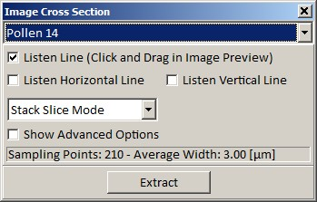
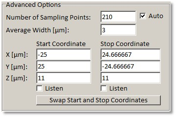
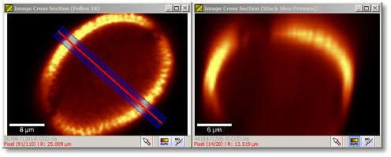
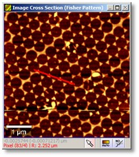
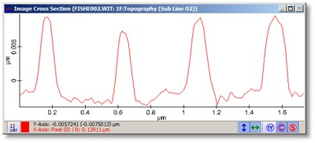

|
描述
图像截面对话框允许将沿一条线的图像强度显示为图谱对象。这可以用于分析图像的结构。此外，可以放置完整的图像堆栈以创建堆栈切片图像。
输入与结果
输入：
任意数量的图像数据对象。
结果：
每个放置的图像一个截面图谱对象。
用户界面

"Pollen 14"（组合框）：
在此选择当前预览图像（如果您放置了多个图像）。
监听线（复选框）：
如果勾选，您可以在任何图像查看器中直接绘制一条线来为此对话框设置新的截面线位置。此选项在启动对话框时自动选中，因此您可以直接在预览图像查看器中绘制截面线。
监听水平线（复选框）：
如果勾选，您可以点击图像查看器以使用点击的图像行作为截面。对话框自动将采样点数设置为行中的像素数以使用图像的确切支持点。
监听垂直线（复选框）
如果勾选，您可以点击图像查看器以使用点击的图像列作为截面。对话框自动将采样点数设置为列中的像素数以使用图像的确切支持点。
堆栈切片模式（组合框）：
仅在放置了图像堆栈时显示。可用于在堆栈切片模式和截面模式之间切换。
显示高级选项（复选框）：
显示高级选项：

采样点数，自动（整数编辑框，复选框）：
设置截面图谱对象的像素数。如果自动复选框被勾选，此值会自动确定（约 3 倍图像像素分辨率）。
平均宽度（浮点编辑框）：
如果平均宽度大于零，则垂直于截面位置、距离小于或等于<平均宽度>的一些像素被平均并用于计算一个截面值。
开始/停止坐标（浮点编辑框）：
在此您可以精确定义截面开始和停止坐标的绝对空间位置。
监听开始/停止坐标（复选框）：
如果勾选，您可以点击图像以使用监听光标机制设置开始或停止坐标。
交换开始和停止坐标（按钮）：
简单地在结果截面中交换开始和停止坐标。
在堆栈切片模式下，可以使用图像堆栈计算堆栈切片图像（例如深度图像）。您可以在截面预览图像窗口（横向图像）中定义一条线，并在第二个图像窗口中查看堆栈切片预览。点击堆栈切片预览窗口中的某处以选择当前堆栈图像。

预览窗口

预览图像查看器显示选定的输入图像以及红色的截面线。如果平均宽度参数大于零，图像查看器将显示用于平均的蓝色区域。

预览图谱查看器显示截面（如果有多个图像被放置则显示多个截面）。